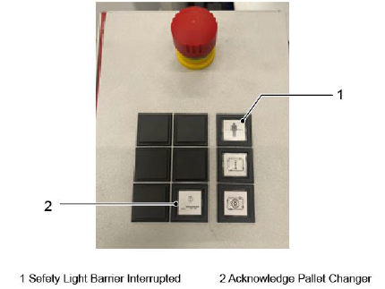

Validation du statut article
Cette fonction permet de fournir le statut article sur les palettes machine en fonction du processus de plan de production. L’opérateur doit observer l’état réel et le comparer pour l’ajuster si nécessaire.

Emplacement : Les palettes intérieures et extérieures sont affichées.
Informations sur la tôle : Les informations de la tôle seront lues une fois le plan de production démarré, elle ne peuvent pas être modifiées.
Action :
L’action nécessaire sera affichée et peut être ajustée en sélectionnant la liste déroulante.
-
Sera traitée
-
Sera déchargée
-
Vide
Sera traitée : Indique que la tôle sera définie comme matière première/reprise à traiter.
Sera déchargée : Indique que la tôle sera définie comme tôle usinée/rebut à décharger.
Vide : Aucune matière sur les palettes machine.
Le réglage standard pour la validation du statut article est :
Machine à l’intérieur : sera déchargée
Machine à l’extérieur : sera traitée
Cela signifie que dans la plupart des cas, pendant l’exécution de la production, l’opérateur peut directement confirmer sans ajustement. La tôle à l’intérieure de la machine doit être traitée et une nouvelle tôle doit être chargée à l’extérieur. Lors de la confirmation, l’échange de palettes sera exécuté en conséquence, ainsi le prochain usinage de tôle sera lancé.
Pour plus de commodité, le bouton de validation à la position de départ peut également être utilisé pour confirmer le statut article. Le réglage standard pour la validation du statut article est utilisé. La barrière lumineuse doit être réinitialisée, appuyez sur le bouton de validation, l’échange de palettes sera exécuté sans autre validation requise par l’IHM.
